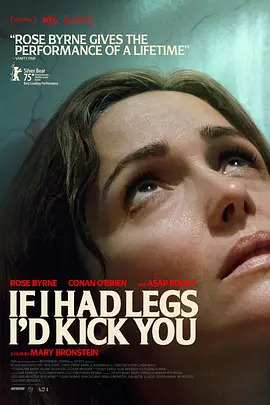

7.3
如果有腿，我会踢你
If I Had Legs I’d Kick You
2025
美国
评分 7.3
导演:
玛丽·布隆斯坦
演员:
萝丝·拜恩 / 德莱尼·奎因 / 玛丽·布隆斯坦 / 拉基姆·梅尔斯 / 艾薇·沃尔克
类型:
剧情,喜剧
剧情简介
琳达（由萝丝·拜恩饰演）是一位兼任心理治疗师和母亲的女性，她的生活看似有序，却在一连串意外中崩裂。女儿患有神秘的慢性疾病，夜晚需靠机器维生——而琳达白天则接待求助者，夜晚则在旅馆与焦虑相伴。丈夫远航不在，家中天花板忽然塌陷，原本避风的港湾瞬间化为一间潮湿、陌生的旅馆。摄于蒙托克的灰蒙环境中，琳达拖着疲惫的身影穿过医院走廊、挂满水渍的屋顶和昏黄灯光的旅馆房间，她每一步都像踩在弹簧上。导演用极近的镜头捕捉她张开的双眼、黯淡的表情，这不仅是情绪的溢出，更像一场慢性失控。她与女儿的互动中，爱与负担混杂——当女儿弯下身依赖输液管，琳达看向镜头，眼神复杂。一方面她想逃离这段消耗，一方面她又明白自己无法彻底脱身。虽然片中不乏冷幽默，比如她在夜晚偷出旅馆饮酒、与邻居聊天的荒诞场景，却从未让观众放松。影片不断将家庭、职业、病痛、疏离压缩在一个母亲的身体里。一夜之间，琳达成了解析的焦点：治疗他人、治疗自己、照看病女、修补日益破败的“家”——她几乎没有立足点。宾至如归的画面迅速转为紧迫的生存试炼：她必须跨越专业身份、社会期望与自我崩塌的边界。当旅馆的邻居与工作人员越过界线，她明白，逃离既是渴望，也是不可能完成的任务。影片最终不是给出慰藉，而让人明白：母亲也可能“耗尽”，而非从容。它是一场紧张、荒诞却又真实的母性曝露——留下的，是那条――“如果我有腿，我会踢你”――不是对世界的愤怒，而是对自己的无力。